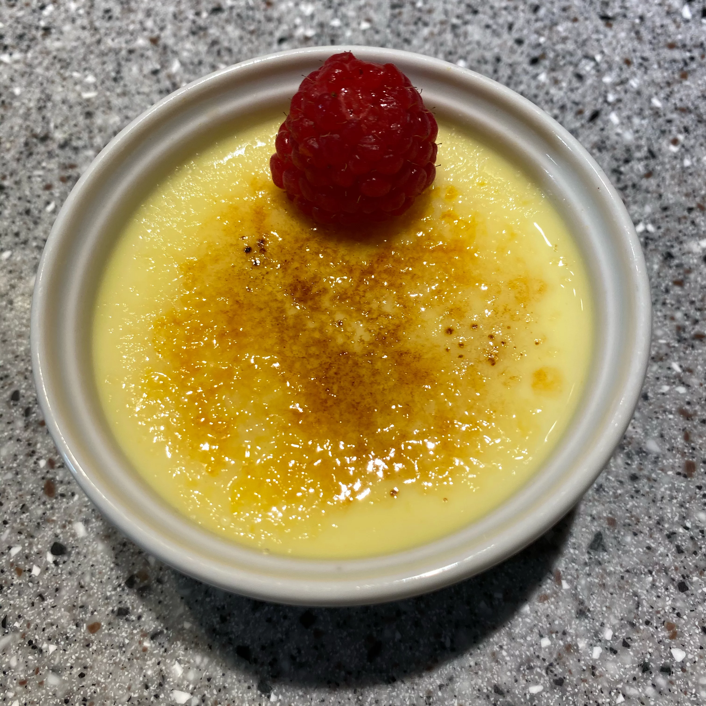

Creme Brulee

Description
Rich, creamy creme brulee should still be jiggly in the center when you
pull it out of the oven.
Ingredients
- 3 tablespoons white sugar
- 1 cup heavy cream
- 3 egg yolks
- ¼ teaspoon vanilla extract
- 2 tablespoons white sugar, divided
Steps
- Preheat oven to 350 degrees F (175 degrees C).
-
Whisk 3 tablespoons sugar and cream in a microwave-safe bowl until well
combined; heat the mixture in microwave until warm, 1 to 2 minutes, and
whisk again to dissolve sugar. Whisk in egg yolks and vanilla extract
until smooth.
-
Pour cream mixture into 2 ramekins. Set ramekins into a roasting pan and
pour in enough hot water to reach halfway up the sides of the ramekins.
-
Bake in the preheated oven until creme desserts are set but still
slightly jiggly when shaken, about 50 minutes. Remove ramekins from hot
water and chill in refrigerator until cold, at least 2 hours.
-
Sprinkle 1 tablespoon of sugar evenly over the top of each dessert. Use
a kitchen torch to lightly toast and melt the sugar topping until brown
and bubbly, about 30 seconds. Let the sugar topping cool before serving.
To serve, use a spoon to crack the crisp sugar open to reveal the creamy
dessert underneath.